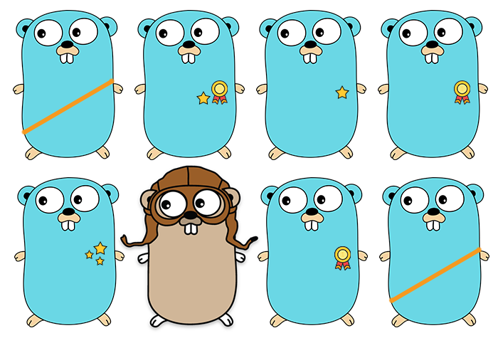

React

Virtual DOM은 변화가 발생하면, 실제 DOM에 적용되기 전에 Virtual DOM에 우선 적용을 시켜봅니다.
실제 DOM에 바로 적용하나, Virtual DOM에 적용하나 같은 연산 비용이 필요할 거라 생각하실 수 있지만,
Vitual DOM은 랜더링 과정이 필요 없기 때문에 연산 비용이 실제 DOM보다 적습니다.
장점
단점
Go
장점
전망
기존 프로그래밍 언어 연구의 성과와 절차를 무시했다는 혹평을 받기도 하는 Go 언어. 구글의 명성에 힘입어 입지를 굳혔다고 악평을 하는 이도 적지 않습니다. 하지만 개발자와 현장의 필요에 의해서 만들어진 혁신이 프로그래밍 언어의 새로운 발전 방향을 제시한 것은 큰 성과라고 볼 수 있습니다. 코드가 방대해져 유지 관리가 힘들어지는 경우를 중심으로 Go 언어의 사용 빈도가 높아지고 있습니다. 쉽고 간편하게 확장성 있는 시스템 구축이 가능한 Go 언어의 특성 상 앞으로는 클라우드 환경에서 활용도가 높아질 것으로 예측됩니다.Git / GitHub

Git
Git은 버전 관리 소프트웨어입니다.
실수를 해서 그것을 찾아야 하는상황, 아니면 전체 파일이 과거의 한 시점으로 돌아가야 하는 상황을 맞을 수 있는데
Git은 파일에 변경사항이 생길때마다 그것을 기록 해 줍니다.
Github
GitHub는 여러분들이 Git으로 저장해서 전송한 파일들을 관리할 수 있게하는 서비스입니다. GitHub은 오픈소스이며,
이곳에 올린 코드들은 모두 공개되어서 다른사람들이 보거나 다운을 받을 수 있습니다.